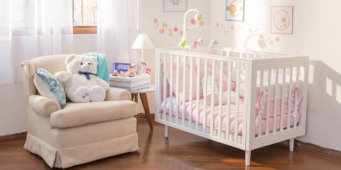

👜 1. Maleta para el hospital: qué llevar y por qué
- Documentos importantes: DNI, carné de controles prenatales, ecografías, análisis recientes, grupo sanguíneo, resultados especiales (como pruebas de laboratorio) y autorización médica si tienes cesárea programada.
- Para ti: Bata o camisón cómodo (de preferencia con abertura para lactancia), brasieres de lactancia, ropa interior grande y cómoda, apósitos posparto, toalla personal, pantuflas y bolsa para ropa sucia.
- Higiene personal: Cepillo y pasta dental, jabón neutro, shampoo, peine, desodorante sin perfume fuerte, papel higiénico, pañuelos desechables, sujetador de cabello y una botella de agua reutilizable.
- Para el bebé: 2 a 3 mudas completas (body, pantalón, gorrito, medias), pañales RN (mínimo 6 unidades), toallitas húmedas sin alcohol, crema para prevenir paspaduras y una toalla pequeña para limpiar babeo. También lleva una mantita para envolver al bebé en brazos y un biberón por si surge alguna dificultad con la lactancia.
🎒 Ten esta maleta lista desde la semana 36. Guárdala cerca de la puerta o en el vehículo si vives lejos del hospital.
🚗 2. Traslado al hospital
- Transporte principal y alternativo: Define quién te llevará y quién puede reemplazarlo si no está disponible. Considera opciones como taxi, ambulancia o un vecino de confianza.
- Horarios: Planea qué hacer si el parto comienza de noche o en horario laboral.
- Distancia: Si vives a más de 30 minutos del hospital, evalúa quedarte temporalmente cerca durante la última semana.
- Otros hijos/as: Si ya tienes hijos, asegúrate de quién se encargará de ellos mientras estés en el hospital.
🏠 3. Tu casa lista para el regreso
- Espacio para el bebé: Prepara un lugar seguro y limpio para dormir, con sábanas lavadas y abrigo suave.
- Higiene y comodidad: Ten a la mano pañales, toallitas, jabón neutro, gasas, y una superficie firme para cambiar al bebé.
- Ropa propia posparto: Deja preparada ropa cómoda y fácil de poner, especialmente si te realizaron cesárea.
- Comidas listas: Si puedes, congela porciones de comida fáciles de calentar o pide ayuda para los primeros días.
- Red de apoyo: Identifica a personas que puedan ayudarte con tareas cotidianas como limpieza, compras o cuidar al bebé.